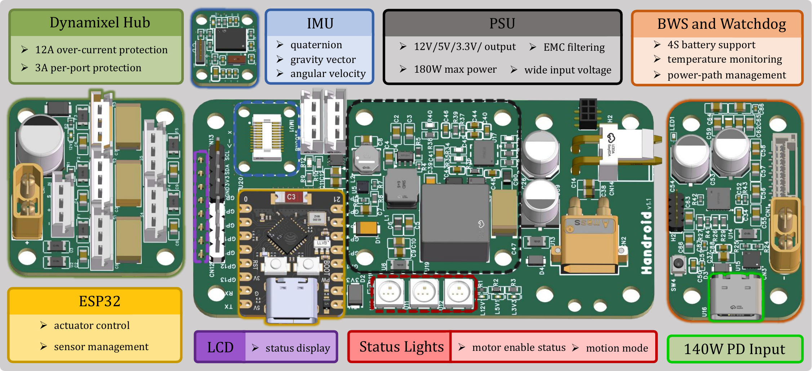

Dexterous hand
embodiment
Handroid keeps a human-hand-like DoF layout for manipulation, teleoperation, and policy learning.
Handroid keeps a human-hand-like DoF layout for manipulation, teleoperation, and policy learning.
The same compact modules are reassigned across fingers, arms, legs, and base actuation.
The platform crosses into locomotion and loco-manipulation without becoming a different robot.
Fully 3D-Printed · Modular · Easy to Fabricate
Manipulation, locomotion, and long-horizon behavior.
Long Horizon
Humanoid
Humanoid
Dex-Hand
Morphology is a key factor that shapes a robot's functional boundaries, task space, and research paradigm. To break the morphological boundary between dexterous hands and humanoid robots and enhance robotic adaptability across diverse tasks, we introduce Handroid, a desktop-scale robotic system that integrates dexterous-hand and humanoid embodiments within a single platform. Handroid has 27 DoFs, a compact size of 0.33 m, and a weight of 2.05 kg. Through teleoperation and reinforcement learning experiments, we demonstrate Handroid's hardware capabilities and application potential in dexterous manipulation, humanoid locomotion, and loco-manipulation tasks that combine both embodiments.
Structure
Finger joints double as humanoid limbs, making the mapping legible instead of ornamental.

Electronics
Power, sensing, status, and actuator management are packaged for repeatable desktop deployment.

Citation
@misc{li2026handroid,
title = {{Handroid}: Bridging Dexterous Hand and Humanoid},
author = {Li, Ruogu and Ma, Chenyang and Li, Sikai and Wei, Zhenyu and Yao, Yunchao and Shi, Haochen and Liu, C. Karen and Song, Shuran and Ding, Mingyu},
year = {2026},
howpublished = {Project page},
url = {https://handroid.org}
}